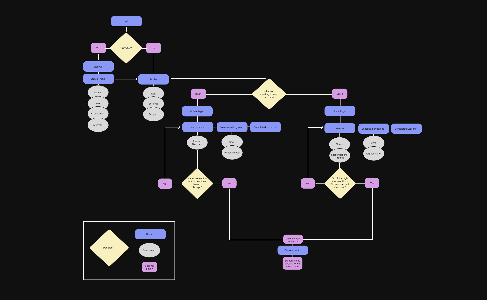
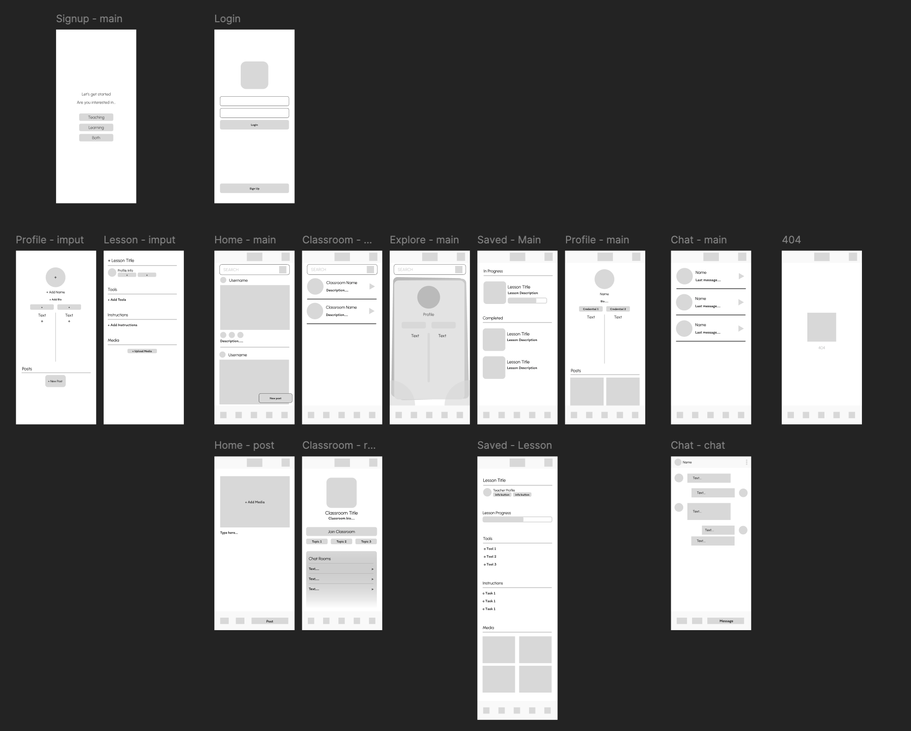
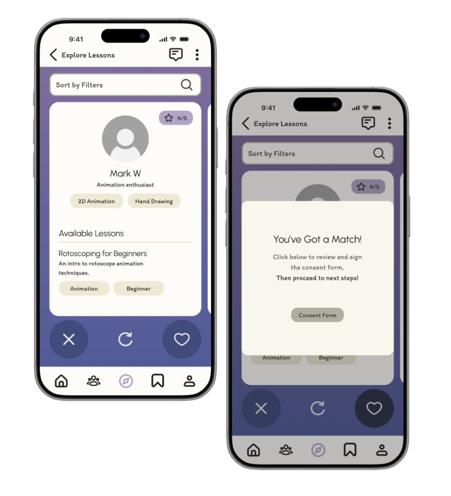
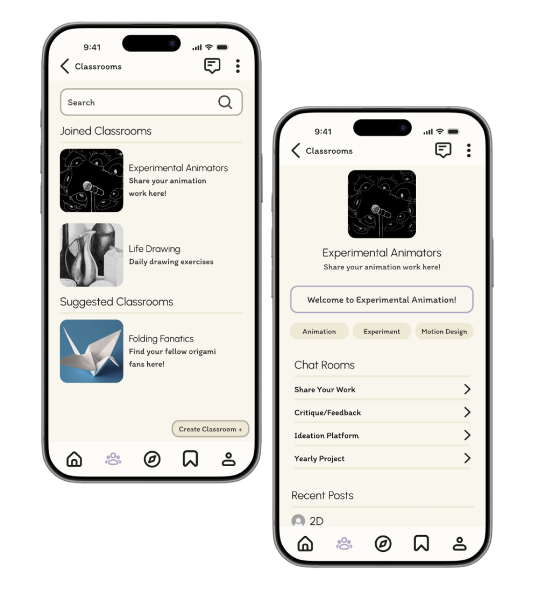

Skill Swap — Judgment free learning environment
Skill Swap is a collaborative learning app prototype designed to connect hobbyists and artists of all skill levels through peer-to-peer learning and skill sharing.
Developed during my first year of graduate study, the project was an early opportunity to experiment with Figma prototyping while exploring how AI tools could support brainstorming, research, and the broader design process.

The Process
How it came togetherPeople have a natural curiosity to learn new skills and hobbies,
but cost, accessibility, and lack of supportive spaces often prevent them from doing so, even though many individuals have valuable skills to share. How might we create a mobile app that encourages peer-to-peer skill exchange in an accessible and judgment-free community?
Initial Plans
Designed to connect artists who prefer learning from peers over formal instruction.
-
Who is it for?
- Ages 16+
- All skill levels
- Artists, crafters, and hobbyists
-
What can users do?
- Share work on a social feed
- Discover and join lessons
- Collaborate in group classrooms
-
How does it work?
- Lessons are the core experience, combining tools, tasks, and media uploads.
- Users can message instructors for support, making it easier to learn and explore new skills.
User Journey and Wireframes
Based on my initial assumptions and preliminary research, I constructed a rough outline for the prototype.

User journey
Wireframes of prototypeResearch Methods & Explorations
-
User Interviews
I conducted three user interviews to gather preliminary insights into user behaviors, needs, and expectations. These findings helped establish the core guidelines and direction for the app.
-
Usability Testing
Four rounds of usability testing provided direct, unbiased feedback on the initial experience. I translated these findings into actionable design changes to improve usability and address user pain points.
-
Figma Make Exploration
I used Figma Make as a brainstorming tool to explore potential visual directions and functionality. By inputting my research and problem statement, I generated an AI concept to serve as a visual blueprint—not as the final prototype, which I built independently.
Key Findings
After developing the initial wireframes, I conducted in-depth user research through interviews and usability testing. These insights revealed key user needs, concerns, and pain points, allowing me to refine the experience and address issues before moving into high-fidelity prototyping.
-
Desire To Learn
Excitement generated during interviews proved that people are motivated to learn—seeking to practice, improve, and grow over time.
-
Social Engagement
Learning is more engaging when it’s social—driven by collaboration and shared experiences. Most interview participants expressed interest in shared learning experiences.
-
Teacher Reliability
Users need trusted, verified instructors and strong privacy protections to feel safe. Several study participants shared concerns for privacy and teacher credibility.
-
Navigational Clarity
During the usability tests, users struggled to navigate the prototype. Simple and familiar navigational elements become key here.
The Final Product
See it in actionExciting Features
Interactive Search Features
Tinder-style explore page creates a dynamic search function for a playful and relaxed introduction to teachers.

Discussion Boards
Classroom setting enable users to gain feedback and advice from peers in group chat settings.

Interactive Prototype
The Impact
This app supports two key motivations from my interviews: social connection and access to learning materials. By pairing resources with a welcoming community, it can make learning feel easier, more engaging, and fun.
Future Considerations
Because the app connects strangers, privacy and safety are a key concern. A teacher–student consent form helps, and future improvements could include blocking/reporting and teacher screening.
Outcomes
What I'd carry forwardThe Value of User Research
This project reinforced the importance of validating assumptions through user research. Interviews and usability testing challenged several of my initial expectations, pushing me to rethink my approach and develop solutions grounded in actual user feedback.
Designing for a Broad Audience
One of my biggest challenges was defining an appropriately focused target audience. Narrowing the scope allowed me to concentrate on specific, actionable user needs and make more realistic, meaningful improvements to the prototype.
Brainstorming with AI
Using Figma Make to explore visual and structural ideas helped accelerate my early design process. While many generated concepts felt generic and lacked the creativity expected of an artist-focused platform, they served as useful starting points that helped me quickly develop and refine my own ideas.
Curious about another project?
View all work